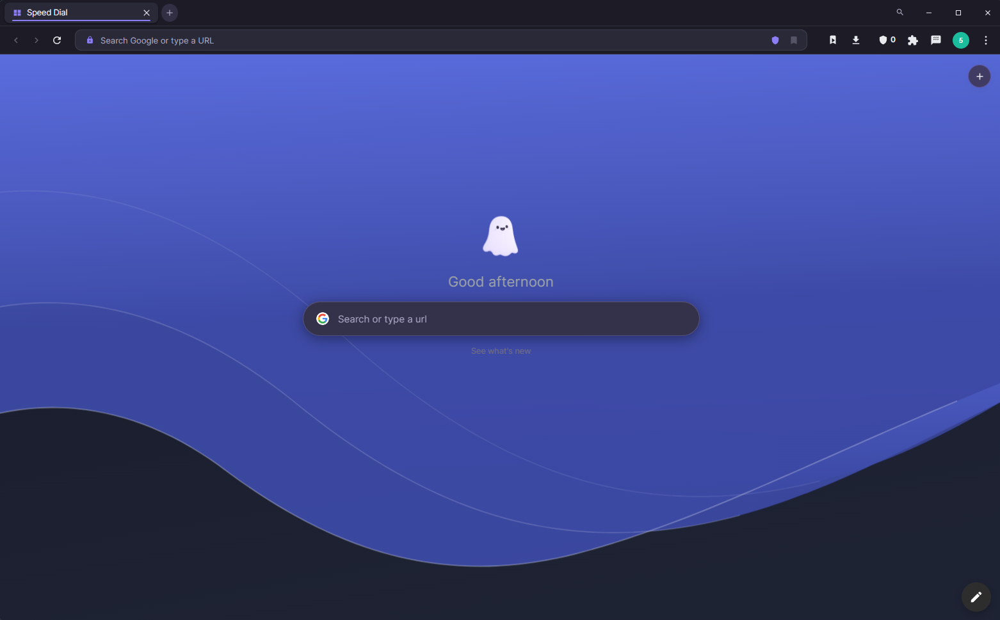

Privoo Desktop
From the Privoo reference. This article covers the browser as of version 5.0.6.
This article is about the desktop browser. For the Android browser, see Privoo for Android. For the coding IDE, see Privoo Coder.
Privoo Desktop is a free and open-source web browser for Windows, macOS and Linux, built on Chromium and Electron. It is distinguished from mainstream Chromium browsers primarily by its defaults: content blocking, encrypted DNS, third-party cookie blocking and fingerprint protection are active on first launch rather than offered as opt-in settings. The browser has no user account system, no synchronisation server, and collects no telemetry.
Development began in May 2026 and the project reached version 5.0.6 by July 2026, across more than sixty tagged releases. It is maintained as an independent project under the MIT license rather than by a company, a fact its documentation cites as the reason its privacy defaults are not constrained by an advertising business model.[1]
Version 5.0.5 introduced .mariana, a feature that publishes a local folder as a Tor hidden service from within the browser, with an optional post-quantum encryption layer applied between two Privoo Desktop instances.
Privoo Desktop is one of three applications sharing the Privoo name. The others are Privoo for Android, a native mobile browser, and Privoo Coder, a coding IDE. Both are closed source and are distributed differently; see Privoo product family below. Statements in this article about licensing, telemetry and updates apply to Privoo Desktop only.
Overview

Privoo Desktop is built on Chromium, so its web compatibility and rendering
behaviour are those of Chromium: pages that work in Google Chrome generally work
here unchanged. What differs is the layer above the engine, which comprises the
content blocker, the privacy defaults, the user interface, a set of first-party
tools, and several internal pages served over a custom privoo:// URL
scheme.
The project's stated rationale is that mainstream browsers are funded, directly or indirectly, by the advertising industry, and therefore ship privacy features that are switched off, difficult to find, or scoped so as not to affect that revenue. Privoo has no advertising revenue, and consequently enables its protections by default.[1]
A secondary effect of blocking at the network layer is performance. Requests for advertising and tracking resources are cancelled before they are issued, so the associated bytes are never transferred and the associated scripts never execute. The project describes this as being fast "because it is doing less work", rather than through engine-level optimisation.
History
Early releases
The first commit, labelled Beta v1.00 — initial release, is dated 23 May 2026.[2] The earliest releases were dominated by distribution and update-mechanism problems rather than browser features: the 1.0.x series contains repeated fixes to the auto-updater, including a stall at 100% completion, a SHA-512 hash mismatch between the built installer and the copy served by the release CDN, and a macOS-specific failure caused by Squirrel rejecting unsigned builds.
Feature work began in earnest with the 2.x series in late May 2026, which introduced interface customisation ("Your Vibe"), and continued through 3.x (June 2026) and 4.x (July 2026). The 5.x series, beginning 14 July 2026, accompanied a visual redesign in which a single configurable accent colour was propagated through the entire interface.
Widevine DRM support has been a recurring theme. Privoo builds against the castLabs Electron distribution rather than upstream Electron, and the release pipeline performs Verified Media Path signing; the project notes that two earlier releases (4.0.3 and 4.0.4) shipped with unverifiable DRM because signing silently skipped, after which the build was changed to fail rather than publish in that state.
Version history
Major series and their first tagged release:
| Series | First release | Notable changes |
|---|---|---|
| 1.x | 23 May 2026 | Initial public beta. Auto-updater and release-pipeline stabilisation; YouTube playback and ad-blocking fixes. |
| 2.x | 29 May 2026 | Interface work: "Your Vibe" tinting, emoji handling, macOS vibrancy, DevTools and mobile-view fixes. |
| 3.x | 9 June 2026 | Continued feature expansion. |
| 4.x | 4 July 2026 | Widevine VMP signing enforced in CI; Spotify library and brand-icon fixes; cookie durability fixes. |
| 5.0.0 | 14 July 2026 | Search bar and suggestion fixes, wave settings, logo default. |
| 5.0.3 | 14 July 2026 | Whole-browser accent theming; fully custom dropdown controls. |
| 5.0.4 | 15 July 2026 | Multi-identity autofill, mobile view, native tray menu, ad-block live-toggle fix. |
| 5.0.5 | 15 July 2026 | .mariana anonymous Tor hosting with a post-quantum layer. |
| 5.0.6 | 17 July 2026 | Identity autofill made opt-in; shield block-count fix; icon-only toolbar shield; YouTube ad-strip and TikTok login fixes; sidebar sites render as desktop. |
As of version 5.0.5 the repository contains 180 commits across 66 tagged releases.[2] Releases are built and published automatically by GitHub Actions for Windows, macOS and Linux when a version tag is pushed.
Default configuration
The following are active on a new installation with no user configuration. Values are those defined in the browser's settings store.[3]
| Setting | Value | Effect |
|---|---|---|
| Ad and tracker blocking | Enabled | EasyList, EasyPrivacy and uBlock Origin rules applied at the network layer |
| Force HTTPS | Enabled | Insecure http:// navigations upgraded |
| Third-party cookies | Blocked | Cross-site Cookie and Set-Cookie headers stripped |
| DNS-over-HTTPS | Enabled | Strict mode; Cloudflare by default; no plaintext fallback |
| Canvas protection | Enabled | Deterministic per-origin noise on canvas reads |
| WebRTC protection | Enabled | IP-handling policy restricted to the public interface |
| Do Not Track | Enabled | DNT header sent |
| Cryptojacking protection | Enabled | Known in-browser mining scripts blocked |
| Search engine | Brave Search | A non-profiling default |
| Dark mode | Enabled | Light theme available |
| Accent colour | #8b7cf7 | Lavender; propagates through the whole interface |
| Automatic updates | Enabled | Checked against the GitHub release feed |
Features
Privacy and security
Main article: Privacy and security
Content blocking uses Ghostery's adblocker-electron engine
(version 2.5.x) with the EasyList, EasyPrivacy and uBlock Origin filter lists,
compiled at launch and cached. Users may disable any built-in list or add
arbitrary list URLs. Blocking is enforced in the request pipeline, so blocked
resources are never fetched.
Fingerprint resistance comprises deterministic per-origin canvas noise, User-Agent
normalisation to a common Chrome identity, and WebRTC IP-leak protection. An
optional stronger mode additionally strips tracking parameters such as
utm_*, fbclid and gclid, reduces the
Referer header on cross-origin requests to the origin only, and sends
the Global Privacy Control (Sec-GPC) signal.
Traffic may be routed through a manual proxy or a bundled Tor circuit.
Independently of that setting, .onion addresses are always routed over
Tor via a proxy auto-configuration rule, with the Tor process started on demand.
ENS (.eth) and Unstoppable Domains names resolve through a public
gateway, and ipfs:// and ipns:// URLs are redirected to an
IPFS gateway.
Anonymous hosting
Main article: .mariana hosting
Introduced in 5.0.5, the .mariana feature publishes a local directory
as a Tor v3 hidden service. The browser starts a loopback-bound HTTP server for the
directory and instructs Tor, over its control port, to create an ephemeral onion
service mapped to it. The resulting share link embeds the 56-character onion
address, which is self-authenticating.
When both the host and the visitor are running Privoo Desktop, an additional encryption layer is negotiated using ML-KEM-768, a post-quantum key encapsulation mechanism, with the resulting shared secret used for AES-256-GCM encryption of the response body. The layer is opportunistic: a visitor using a conventional Tor browser receives the site over Tor alone.
Built-in tools
Main articles: Built-in tools and Privoo AI
Privoo ships first-party equivalents of commonly installed extensions, on the
stated reasoning that each third-party extension is an additional party granted
permission to read and modify every page visited. These include a password vault
(encrypted, local-only), a download manager, an AI assistant that operates against
a user-supplied API key or a local Ollama model, a media downloader based on
yt-dlp, a parallel-connection download accelerator, a video
enhancement filter, and identity autofill. Third-party .crx and
unpacked extensions can also be loaded, with partial API support.
Browsing and interface
Main articles: Browsing and Appearance
The interface provides tab groups, drag-to-reorder tabs, a split view for two simultaneous pages, vertical tabs with a collapsible icon rail, isolated browser profiles, a guest session, incognito windows, a command palette bound to Ctrl K, reader and focus modes, and mobile device emulation. A configurable new tab page ("Speed Dial") supports image, video and animated backgrounds.
Privacy and security
Every protection, what it does, and which setting controls it.
.mariana hosting
Tor hidden services and the post-quantum layer, in detail.
Built-in tools
The first-party tools shipped inside the browser.
Privoo AI
The built-in assistant: your own key, or a local model via Ollama.
Browsing
Tabs, split view, profiles and the address bar.
Appearance
Accent colour, themes, glass effects and layout.
Architecture
Process model
Privoo follows Electron's split between a main process and renderer processes. The
main process (main.js) owns window management, the request pipeline
and blocking, the privoo:// and mariana:// protocol
handlers, session hardening, proxy and Tor control, downloads, and inter-process
communication. Page content is rendered inside <webview> guests
rather than in the host renderer, which keeps site content isolated from the
browser's own interface.
Two preload bridges expose a restricted API surface: preload.js
provides window.privoo to the browser interface, and
webview-preload.js provides window.privooInternal to the
internal pages. Privileged operations occur only in the main process, behind
explicit IPC channels.
Because Privoo uses the castLabs Electron distribution, the bundled Chromium includes the Widevine Content Decryption Module, which is what permits playback of DRM-protected services such as Spotify and Netflix. Release builds are signed for Verified Media Path in continuous integration; the build fails rather than publish if that signing step does not complete.
Internal protocol
Privoo registers privoo:// as a privileged, standard, secure scheme
and serves its internal pages from it. Registering the scheme as standard gives
those pages a normal origin, which is what allows them to use ordinary web APIs.
A second scheme, mariana://, is registered on the same terms and is
handled by a main-process handler that fetches over Tor and decrypts.
| URL | Page |
|---|---|
privoo://newtab | Speed Dial (new tab page) |
privoo://settings | Settings |
privoo://extensions | Built-in and installed tools |
privoo://mariana | Anonymous hosting management |
privoo://identities | Saved identities for autofill |
privoo://history | History |
privoo://bookmarks | Bookmarks |
privoo://downloads | Downloads |
privoo://ai | Privoo AI |
privoo://news | Release notes, rendered locally |
Data storage
All state is stored in a single directory on the local filesystem, with no remote
component. Settings are held as human-readable JSON in
privoo-settings.json; history, downloads, bookmarks, saved identities
and .mariana site keys are stored alongside it. Saved passwords are
encrypted. Browser profiles are implemented by redirecting Chromium's entire
userData directory at process start, which isolates cookies, cache, storage and
history between profiles at the filesystem level.
| Platform | Path |
|---|---|
| Windows | %APPDATA%/privoo/ |
| macOS | ~/Library/Application Support/privoo/ |
| Linux | ~/.config/privoo/ |
Privacy model
Privoo's privacy position rests on the absence of infrastructure rather than on policy. There is no account system, no synchronisation server, and no analytics endpoint; the project's claim is therefore that user data cannot be breached, subpoenaed or sold from a server that does not exist. Privacy statistics shown in the browser's shield interface are computed and stored locally. The release notes page is rendered from the local build and issues no network request.
The browser does make two categories of outbound request on its own behalf: update checks against the GitHub release feed, and periodic filter-list updates. Neither carries a user identifier. The project's documentation states these explicitly rather than claiming zero network activity.
The corresponding cost is stated plainly in the same documentation: because no sync server exists, bookmarks and passwords do not propagate between devices, and moving them requires copying the profile directory manually.
Privoo product family
Three applications share the Privoo name and visual identity. They are separate programs with separate codebases, and they differ substantially in licensing, distribution and update behaviour. The distinction matters because the properties most often associated with Privoo, namely that it is open source, auditable and updates itself, are properties of Privoo Desktop specifically.
| Aspect | Privoo Desktop | Privoo for Android | Privoo Coder |
|---|---|---|---|
| Type | Web browser | Web browser | AI coding IDE |
| Platforms | Windows, macOS, Linux | Android 10 and later | Windows |
| Built with | Electron, Chromium | Kotlin, Jetpack Compose, Android WebView | Electron, Monaco |
| Source | MIT licensed, public | Closed source | Closed source |
| Distribution | GitHub Releases, public | APK on Proton Drive, link in Discord | Proton Drive, link in Discord |
| Access requirement | None | Discord membership | Discord membership and the Contributor role |
| Account | None | None | Discord sign-in required |
| Updates | Automatic | None; manual reinstall | Manual |
Only Privoo Desktop is open source. Claims made about the two closed-source applications, including their privacy behaviour, rest on the project's own documentation and cannot be verified by reading their code, which is the standard this reference otherwise applies to Privoo Desktop. Privoo for Android also has no update mechanism, so an installed copy does not become current on its own.
Privoo for Android
Native Kotlin and Jetpack Compose mobile browser. Closed source, sideloaded, no automatic updates.
Privoo Coder
AI agent coding IDE on Electron and Monaco. Closed source, Windows, Contributor role required.
Limitations and criticism
Several limitations are acknowledged by the project itself:
- Partial extension support. Electron implements a subset of Chrome's extension APIs. Extensions relying on
contextMenus,privacy,webNavigationand other advanced APIs may be limited or inert. Full CRX support remains an open roadmap item. - Unnotarised macOS builds. Release builds are produced without Apple notarisation, so Gatekeeper warns on first launch. This follows from the project not holding a paid Apple developer account.
- No synchronisation. A deliberate consequence of having no server, but a functional regression relative to mainstream browsers.
- Anonymity scope. The documentation states that no browser makes a user anonymous, and directs users whose threat model involves a state adversary to Tor Browser rather than Privoo.[1]
- Post-quantum layer is bounded. The
.marianapost-quantum layer applies only between two Privoo Desktop instances and protects the transport only. The project explicitly declines to describe it as unbreakable.
As an independent project maintained outside a company, Privoo also carries the support and continuity characteristics of such projects: there is no support contract, and no guarantee of maintenance.
See also
- Privoo Desktop: Privacy and security
- Privoo Desktop: .mariana hosting
- Privoo Desktop: Built-in tools
- Privoo Desktop: Privoo AI
- Privoo Desktop: Installation
- Privoo Desktop: FAQ and troubleshooting
- Privoo for Android
- Privoo Coder
References
- Privoo Browser README. Project repository. Retrieved 16 July 2026.
- Release history and tags. Project repository. 66 tags, 180 commits as of v5.0.5.
settings-store.js, default settings object. Project repository, version 5.0.6.- Ghostery adblocker engine, used via
@ghostery/adblocker-electron2.5.x. - castLabs Electron releases, providing the Widevine-enabled Electron 42.3.3 build.